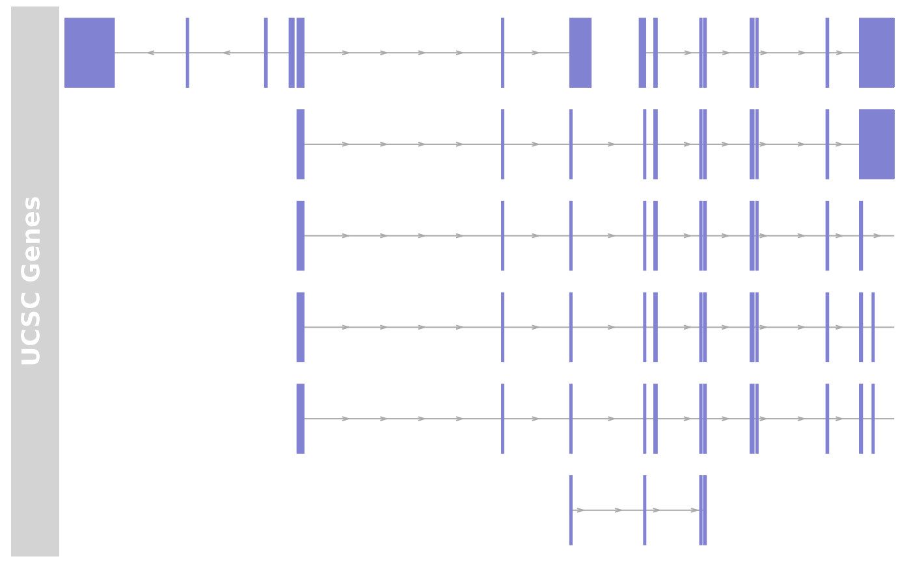

UcscTrack.RdThe UCSC data base provides a wealth of annotation information. This
function can be used to access UCSC, to retrieve the data available
there and to return it as an annotation track object ameanable to
plotting with plotTracks.
clearSessionCache is can be called to remove all cached items
from the session which are generated when connecting with the UCSC
data base.
UcscTrack(track, table=NULL, trackType=c("AnnotationTrack", "GeneRegionTrack", "DataTrack", "GenomeAxisTrack"), genome, chromosome, name=NULL, from, to, ...) clearSessionCache()
| track | Character, the name of the track to fetch from UCSC. To find out about available tracks please consult the online table browser at http://genome.ucsc.edu/cgi-bin/hgTables?command=start. |
|---|---|
| table | Character, the name of the table to fetch from UCSC, or
|
| trackType | Character, one in |
| genome | Character, a valid USCS genome identifier for which to fetch the data. |
| chromosome | Character, a valid USCS character identifier for which to fetch the data. |
| name | Character, the name to use for the resulting track object. |
| from, to | A range of genomic locations for which to fetch data. |
| ... | All additional named arguments are expected to be either
display parameters for the resulting objects, or character scalars of
column names in the downloaded UCSC data tables that are matched by
name to available arguments in the respective constructor functions as
defined by the |
The data stored at the UCSC data bases can be of different formats:
gene or transcript model data, simple annotation features like CpG
Island locations or SNPs, or numeric data like conservation or
mapability. This function presents a unified API to download all kinds
of data and to map them back to one of the annotation track objects
defined in this package. The type of object to hold the data has to be
given in the trackType argument, and subsequently the function
passes all data on to the respective object constructor. All
additional named arguments are considered to be relevant for the
constructor of choice, and single character scalars are replaced by
the respective data columns in the dowloaded UCSC tables if
available. For instance, assuming the table for track 'foo' contains
the columns 'id', 'type', 'fromLoc' and 'toLoc', giving the featuer
identifier, type, start end end location. In order to create an
AnnotationTrack object from that data, we have to
pass the additional named arguments id="id",
feature="type", start="fromLoc" and codeend="toLoc" to the
UcscTrack function. The complete function call could look like
this:
UcscTrack(track="foo", genome="mm9", chromosome=3,
from=1000, to=10000, trackType="AnnotationTrack", id="id",
feature="type", start="from", end="to")
To reduce the bandwidth, some caching of the UCSC connection takes
place. In order to remove these cached session items, call
clearSessionCache.
The Gviz.ucscUrl option controls which URL is being used to
connect to UCSC. For instance, one could switch to the European UCSC
mirror by calling
options(Gviz.ucscUrl="http://genome-euro.ucsc.edu/cgi-bin/".
An annotation track object as determined by trackType.
Florian Hahne
if (FALSE) { ## Create UcscTrack for Known Genes from mm9 genome from <- 65921878 to <- 65980988 knownGenes <- UcscTrack(genome="mm9", chromosome="chrX", track="knownGene", from=from, to=to, trackType="GeneRegionTrack", rstarts="exonStarts", rends="exonEnds", gene="name", symbol="name", transcript="name", strand="strand", fill="#8282d2", name="UCSC Genes") } ## if the UCSC is not accessible load prepared object data(ucscItems) ## knownGenes is essentially GeneRegionTrack knownGenes#> GeneRegionTrack 'UCSC Genes' #> | genome: mm9 #> | active chromosome: chrX #> | annotation features: 76